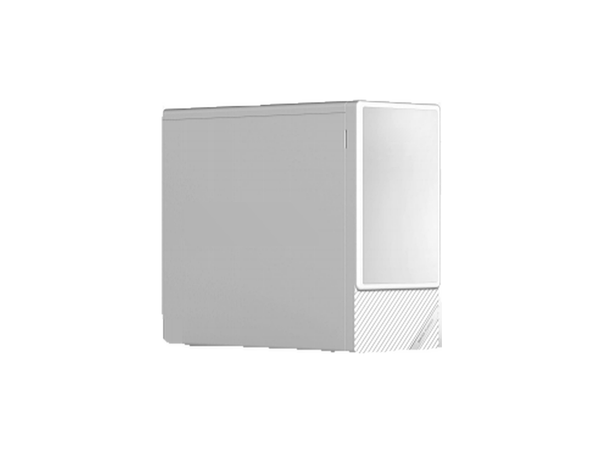

Sottolavello
SottolavelloRP-U07
Purificatore RO sottolavello 400–600 GPD
SKU: RP-U07
MOQ: da confermare su richiesta
Home/Prodotti/Sistemi RO sottolavello/ RP-U06

Sistemi RO sottolavello
RO a membrana piccola con serbatoio integrato — quattro opzioni. Il doppio motore guida la serie.
RP-U06 è una famiglia RO a membrana piccola con serbatoio integrato: una membrana RO compatta abbinata a un serbatoio d’acqua interno, così il serbatoio offre alto flusso senza una membrana grande. Quattro opzioni condividono la stessa idea e differiscono per dimensioni del serbatoio, membrana e riscaldamento: il doppio motore (membrana 400G, serbatoio a pressione da 2 L, doppia uscita acqua potabile + lavaggio cucina, portata di acqua pura di 1,05 L/min); il serbatoio da 4,1 L (100G, serbatoio integrato di acqua pura da 4,1 L, 4–9 L/min); il serbatoio da 8 L (50–150G, serbatoio integrato da 8 L con UV, 2,5–5 L/min, con versione opzionale a riscaldamento istantaneo a 4 temperature); e il serbatoio da 7,5 L (75/100G, serbatoio integrato di acqua pura da 7,5 L con UV statico, 5 L/min, cambio cartuccia a innesto laterale, con versione opzionale a riscaldamento a film spesso sul rubinetto). Le specifiche sono confermate per modello e ordine.
Richiedi un preventivo per RP-U06
Tensione / frequenza configurabili per il paese di destinazione. Altre configurazioni sono confermate per ordine.
RP-U06 è una famiglia RO a membrana piccola con serbatoio integrato: una membrana RO compatta abbinata a un serbatoio d’acqua interno, così il serbatoio offre alto flusso senza una membrana grande. L’opzione principale è il doppio motore (membrana 400G, serbatoio a pressione da 2 L, doppia uscita acqua potabile + lavaggio cucina, portata di acqua pura di 1,05 L/min, con una portata iniziale di oltre 4,2 L/min nei primi 3 secondi). Altre tre opzioni condividono la stessa idea: un serbatoio da 4,1 L (100G, 4–9 L/min), un serbatoio da 8 L con UV (50–150G, 2,5–5 L/min) e un serbatoio da 7,5 L con UV statico (75/100G, 5 L/min). Tutte e quattro le opzioni hanno un volume nominale di acqua purificata di 4000 L.
Qual è la quantità minima d'ordine?
Il primo ordine è di 200 unità per modello, e i riordini sono di 500 unità.
Posso ordinare un campione prima di un ordine in volume?
Sì. I campioni sono pronti in 15 giorni e il costo del campione viene rimborsato con il primo ordine in volume. Gli ordini in volume richiedono 40 giorni dopo l'approvazione del campione e vengono spediti FOB Shenzhen.
Quale opzione dovrei scegliere?
Quotare come RP-U06 e specificare l’opzione: doppio motore (400G, serbatoio a pressione da 2 L, doppia uscita), serbatoio da 4,1 L (100G), serbatoio da 8 L con UV (50–150G, opzione di riscaldamento) o serbatoio da 7,5 L (75/100G, UV statico).
Quattro opzioni di serbatoio integrato — quotare come RP-U06 e specificare l’opzione (doppio motore, serbatoio da 4,1 L, serbatoio da 8 L o serbatoio da 7,5 L).
Passi il cursore sull'immagine di una variante per vederne le specifiche. Sui touchscreen, tocchi un'immagine.



Specifiche complete di ciascuna variante, fianco a fianco. La tabella delle specifiche più avanti mostra i valori di RP-U06.
| Specifica | RP-U06-1 — doppio motore (YRO-400G) | RP-U06-2 — serbatoio da 4,1 L (M2503R) | RP-U06-3 — serbatoio da 8 L, opzione di riscaldamento (M922RN) | RP-U06-4 — serbatoio da 7,5 L (AM601R) |
|---|---|---|---|---|
| Membrana RO | 400G | 100G | 50–150G (disponibile anche 200G) | 75/100G |
| Serbatoio | Serbatoio a pressione 2L | Serbatoio integrato acqua pura 4.1L | Serbatoio integrato acqua pura 8L con UV | Serbatoio integrato acqua pura 7.5L, UV statico 99.9% |
| Portata in uscita | Acqua pura 1.05 L/min; portata iniziale >4.2 L/min nei primi 3 secondi | 4–9 L/min | 2.5–5 L/min, equivalente a ~1900G | 5 L/min |
| Uscite | Doppia: acqua da bere + lavaggio cucina | Uscita singola | Confermato per ordine | Uscita singola |
| Riscaldamento | Senza riscaldamento | Senza riscaldamento | Opzionale: acqua calda istantanea a 4 temperature, 2100 W, 20 L/h | Opzionale: riscaldamento a film spesso del rubinetto, 2100 W, 25/45/65/85/100 °C |
| Dimensioni (L×P×A) | 467 × 160 × 384 mm | 352 × 160 × 319 mm | Confermato per ordine | 415 × 187 × 392 mm |
| Volume nominale di acqua purificata | 4000 L | 4000 L | 4000 L | 4000 L |
| Filtrazione | Composito PAC + RO (2 cartucce) | PPC + RO + post-carbone | PPC + RO + C | PP + composito a carbone attivo + RO + post-carbone (3 cartucce, 4 strati) |
| Tensione / frequenza | Configurabile per il paese di destinazione | Configurabile per il paese di destinazione | Configurabile per il paese di destinazione | Configurabile per il paese di destinazione |
22 righe di specifiche dal catalogo ROPureOEM.
| Membrana RO | 400G |
|---|---|
| Filtrazione | Composito PAC + RO (2 cartucce); materiale filtrante universale |
| Flusso acqua pura | 1.05 L/min |
| Portata di acqua netta | 2.0 L/min |
| Portata iniziale di acqua pura | >4.2 L/min nei primi 3 secondi (0.25 MPa, acqua di rubinetto a 25 °C) |
| Volume totale nominale di acqua purificata | 4000 L (acqua pura); 4000 L (acqua netta) |
| Efficienza idrica | Classe 1; tasso di produzione di acqua netta 0.65; tasso di desalinizzazione ≥93% (0.25 MPa, acqua di rubinetto a 25 °C, dopo 30 minuti) |
| Potenza nominale | 72 W |
| Rumore | Potenza sonora ≤55 dB(A) |
| Serbatoio a pressione | 2 L |
| Rubinetto | Uscita doppia: acqua da bere + lavaggio cucina; rubinetto meccanico grigio con comando a manopola, 60 cm a vista |
| Riscaldamento | Nessuno |
| Promemoria vita filtro | Tempo di accensione + tempo di lavoro della pompa (doppio calcolo) |
| Lavaggio | Automatico; zero acqua stagnante (programma di lavaggio, nessun riflusso) |
| Rilevamento TDS / sterilizzazione | Nessuno |
| Memoria allo spegnimento | Sì |
| Pressione di esercizio prima della membrana | 0.4–0.8 MPa |
| Pressione / temperatura dell’acqua applicabile | 0.1–0.4 MPa; 5–38 °C |
| Protezione contro le scosse elettriche | Classe II |
| Dimensioni | 467 × 160 × 384 mm |
| Peso netto | 9.5 kg |
| Peso lordo | 10.3 kg |
| Dimensioni dell’imballaggio | 565 × 231 × 505 mm |
| Tensione / frequenza | Configurabile per il paese di destinazione (tensione nominale 220 V~, 50 Hz) |
| Altre configurazioni | Confermato per ordine |
Le specifiche sono tratte dal catalogo ROPureOEM. Se un valore non è ancora confermato, è indicato come “Confermato per ordine” — non pubblichiamo valori non confermati.
SottolavelloPurificatore RO sottolavello 400–600 GPD
SKU: RP-U07
MOQ: da confermare su richiesta
 Sottolavello
SottolavelloRO sottolavello con riscaldamento ad accumulo
SKU: RP-U08
MOQ: da confermare su richiesta
 Sottolavello
SottolavelloPurificatore RO ad alta capacità ad accesso frontale
SKU: RP-U09
MOQ: da confermare su richiesta
 Sottolavello
SottolavelloPurificatore RO a tre cartucce
SKU: RP-U11
MOQ: da confermare su richiesta